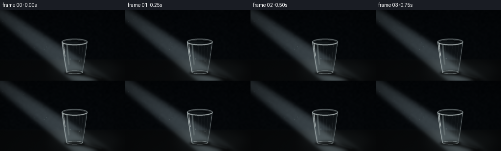
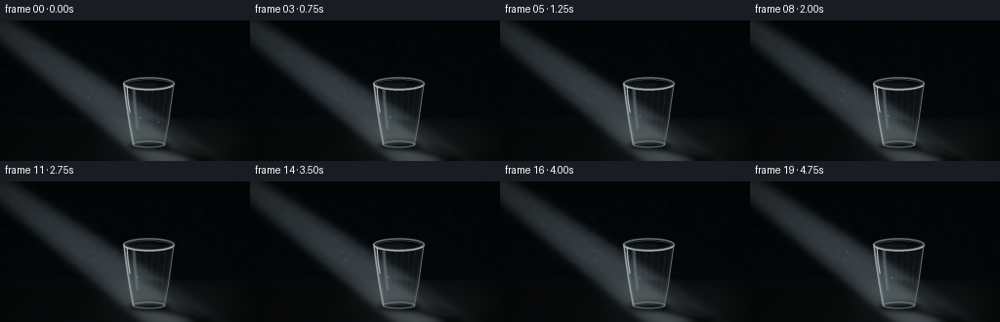
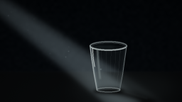
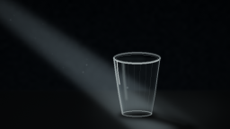

CODING AGENTS AS PIXEL WORLD MODELS
traex/GPT-5.6-Sol · phygen_044
点击播放 · 原生 RGB 像素
逐轮保存的候选
回放视频、检查图与代码变化。
每份候选均可单独播放。实际图片检查记录在下方工具轨迹中。
候选 01播放与检查图
点击播放 · 原生 RGB 像素


展开代码变化
--- 上一保存版本 +++ 本次保存版本 @@ -0,0 +1,232 @@ +from pathlib import Path +import json +import cv2 +import numpy as np +from artifact_io import save + +# Procedural text-to-video render. Everything is drawn at 3x resolution and +# reduced with area filtering for soft photographic edges. +CASE_DIR = Path(__file__).resolve().parent +SPEC = json.loads((CASE_DIR / "task_spec.json").read_text()) +W, H = int(SPEC["width"]), int(SPEC["height"]) +N = int(SPEC["frames"]) +S = 3 +w, h = W * S, H * S +Y, X = np.mgrid[0:h, 0:w].astype(np.float32) +x, y = X / S, Y / S +rng = np.random.default_rng(4401) + + +def blur(mask, radius): + sigma = max(0.01, radius * S) + return cv2.GaussianBlur(mask.astype(np.float32), (0, 0), sigmaX=sigma, sigmaY=sigma) + + +def poly_mask(points, soft=0.0): + m = np.zeros((h, w), np.float32) + pts = np.round(np.asarray(points, np.float32) * S).astype(np.int32) + cv2.fillPoly(m, [pts], 1.0, lineType=cv2.LINE_AA) + return blur(m, soft) if soft else m + + +def ellipse_mask(center, axes, soft=0.0): + m = np.zeros((h, w), np.float32) + c = tuple(np.round(np.asarray(center) * S).astype(int)) + a = tuple(np.round(np.asarray(axes) * S).astype(int)) + cv2.ellipse(m, c, a, 0, 0, 360, 1.0, -1, cv2.LINE_AA) + return blur(m, soft) if soft else m + + +def stroke_polyline(layer, points, color, width_px, blur_px=0.0, closed=False): + m = np.zeros((h, w), np.float32) + pts = np.round(np.asarray(points, np.float32) * S).astype(np.int32) + cv2.polylines(m, [pts], closed, 1.0, max(1, int(width_px * S)), cv2.LINE_AA) + if blur_px: + m = blur(m, blur_px) + a = np.clip(m, 0, 1)[..., None] + layer[:] = layer * (1 - a) + np.asarray(color, np.float32) * a + + +def stroke_ellipse(layer, center, axes, color, width_px, blur_px=0.0, start=0, end=360): + m = np.zeros((h, w), np.float32) + c = tuple(np.round(np.asarray(center) * S).astype(int)) + axy = tuple(np.round(np.asarray(axes) * S).astype(int)) + cv2.ellipse(m, c, axy, 0, start, end, 1.0, max(1, int(width_px * S)), cv2.LINE_AA) + if blur_px: + m = blur(m, blur_px) + a = np.clip(m, 0, 1)[..., None] + layer[:] = layer * (1 - a) + np.asarray(color, np.float32) * a + + +# Static, low-frequency wall texture. This stays coherent from frame to frame. +small_noise = rng.normal(0, 1, (36, 64)).astype(np.float32) +wall_noise = cv2.resize(small_noise, (w, h), interpolation=cv2.INTER_CUBIC) +fine_noise = rng.normal(0, 0.65, (h, w)).astype(np.float32) +texture = wall_noise * 0.75 + fine_noise * 0.30 + +# Dust seeds: only motes that fall inside the light are actually visible. +dust = [] +for _ in range(34): + dust.append((rng.uniform(5, 245), rng.uniform(4, 124), rng.uniform(0.35, 1.15), + rng.uniform(0, 2*np.pi), rng.uniform(0.25, 0.8))) + +frames = [] +for fi in range(N): + phase = 2 * np.pi * fi / N + drift = 0.75 * np.sin(phase * 0.82) + shimmer = 0.975 + 0.025 * np.sin(phase * 1.15 + 0.4) + + # Near-black blue charcoal room, with a floor plane beginning at y=101. + base = np.zeros((h, w, 3), np.float32) + vertical = np.clip(y / H, 0, 1) + base[..., 0] = 3.2 + 2.4 * vertical + texture + base[..., 1] = 5.7 + 3.0 * vertical + texture * 1.05 + base[..., 2] = 8.1 + 3.8 * vertical + texture * 1.10 + + floor_gate = 1 / (1 + np.exp(-(y - 101.0) / 0.75)) + # floor is slightly warmer and gets lighter toward the foreground + floor_rgb = np.stack([7.0 + (y-101)*0.06, + 8.5 + (y-101)*0.065, + 9.4 + (y-101)*0.07], axis=-1) + base = base * (1-floor_gate[..., None]) + floor_rgb * floor_gate[..., None] + horizon = np.exp(-((y-101.2)/1.8)**2) * 1.5 + base += horizon[..., None] * np.array([0.8, 0.9, 1.0], np.float32) + + # The visible beam is a widening strip around a diagonal ray from upper-left. + # d is unit length; q is signed perpendicular distance and t runs along ray. + px, py = -12.0, -3.0 + dx, dy = 0.803, 0.596 + t = (x-px)*dx + (y-py)*dy + q = -(x-px)*dy + (y-py)*dx - drift + half_width = 12.0 + 0.054*np.maximum(t, 0) + beam_edge = 1 / (1 + np.exp((np.abs(q)-half_width)/2.2)) + beam_extent = (1/(1+np.exp(-(t-2)/4))) * (1/(1+np.exp((t-302)/10))) + beam = beam_edge * beam_extent + # Slight inner core gives the shaft a luminous center without hard borders. + core = np.exp(-(q/(half_width*0.60))**4) * beam_extent + density = (0.58 + 0.42*np.clip(t/245, 0, 1)) * shimmer + beam_luma = beam * density * 0.74 + core * 0.14 + + # The far beam is partly occluded by the cup; this makes its cast shadow + # read as a physical interruption rather than a dark shape pasted on top. + occ = poly_mask([(137, 91), (170, 100), (252, 144), (201, 144)], soft=3.8) + occ *= floor_gate + beam_luma *= (1 - 0.68*occ) + base += beam_luma[..., None] * np.array([68, 76, 79], np.float32) + + # A soft pool where the ray grazes the table. + pool = ellipse_mask((174+drift*.4, 124), (74, 22), soft=10) + pool *= floor_gate * (0.65 + 0.35*beam) + base += pool[..., None] * np.array([13, 15, 15], np.float32) * shimmer + + # Long, soft shadow on the bottom plane, aligned with the incident ray. + shadow = poly_mask([(136, 124), (170, 123), (238, 143), (207, 147)], soft=4.0) + shadow_core = poly_mask([(141, 126), (166, 126), (222, 142), (205, 144)], soft=2.1) + shadow_alpha = np.clip(0.47*shadow + 0.27*shadow_core, 0, 0.70) * floor_gate + base *= (1 - shadow_alpha[..., None]) + # Cool penumbra along the far edge. + pen = poly_mask([(166, 126), (237, 142), (223, 144), (164, 129)], soft=3.2) + base += pen[..., None] * np.array([0.4, 0.7, 1.0], np.float32) + + # Contact shadow anchors the cup. + contact = ellipse_mask((152.5, 128.5), (22, 4.0), soft=2.2) + base *= (1 - 0.68*contact[..., None]) + + # Cup geometry: clear disposable plastic, wider at the rim than at the base. + body = poly_mask([(126.5, 64.5), (178.0, 64.5), (168.2, 127.2), (136.3, 127.2)], soft=0.35) + + # Refract the already-lit room inside the plastic. Subtle displacement bends + # the diagonal shaft at both side walls. + map_x = X.copy() + map_y = Y.copy() + normalized = (x-152.2) / np.maximum(14.0, 25.8 - (y-65)*0.145) + displacement = (2.0*normalized + 0.8*np.sin((y-64)*0.12)) * S + map_x = (X - displacement*body).astype(np.float32) + map_y = (Y + (0.55*np.cos(normalized*np.pi)*body)*S).astype(np.float32) + refr = cv2.remap(base, map_x, map_y, cv2.INTER_LINEAR, borderMode=cv2.BORDER_REFLECT) + # Thin clear plastic slightly veils and desaturates the view through it. + cup_tint = np.zeros_like(base) + cup_tint[:] = [66, 73, 75] + a = (0.105*body)[..., None] + base = base*(1-a) + (refr*0.86 + cup_tint*0.14)*a + + # Frosted wall gradients at the sides and near base. + side_left = np.exp(-((x-(127.0 + (y-65)*0.155))/2.0)**2) * body + side_right = np.exp(-((x-(177.5 - (y-65)*0.152))/1.8)**2) * body + lower_haze = np.clip((y-112)/17, 0, 1) * body + lit_wall = (0.18*body + 0.40*side_left + 0.23*side_right + 0.14*lower_haze) + base += lit_wall[..., None] * np.array([45, 51, 52], np.float32) * shimmer + + # Fine molded vertical ribs, characteristic of a lightweight plastic cup. + rib_layer = base.copy() + for frac in (-0.70, -0.42, -0.14, 0.16, 0.45, 0.72): + yy = np.linspace(70, 123, 16) + widths = 24.8 - (yy-65)*0.145 + xx = 152.2 + frac*widths + alpha_col = 0.7 if abs(frac) < .5 else 0.9 + stroke_polyline(rib_layer, list(zip(xx, yy)), + (116*alpha_col, 124*alpha_col, 125*alpha_col), .42, .15) + base = base*(1-body[..., None]*0.36) + rib_layer*(body[..., None]*0.36) + + # Back of rim, dark interior, and front luminous lip. + opening = ellipse_mask((152.2, 64.8), (25.8, 6.0), soft=0.5) + inner = ellipse_mask((152.2, 65.3), (22.8, 4.25), soft=0.45) + base *= (1 - (0.15*inner)[..., None]) + # Slight transmitted glow in the near-left inner wall. + inner_glow = ellipse_mask((145.8, 65.0), (15.0, 3.3), soft=1.8) + base += inner_glow[..., None] * np.array([8, 10, 10], np.float32) + + details = base.copy() + # rear rim is subdued + stroke_ellipse(details, (152.2,64.7), (25.8,6.0), (104,112,114), 1.05, .30, 180, 360) + # front rim catches the incoming light + stroke_ellipse(details, (152.2,64.7), (25.8,6.0), (172,181,181), 1.15, .22, 0, 180) + stroke_ellipse(details, (152.2,65.0), (23.0,4.35), (102,111,113), .55, .16, 0, 360) + # side edges and thicker rolled lip + stroke_polyline(details, [(126.6,64.4),(129.1,83),(132.3,105),(136.3,127.0)], (154,164,165), 1.05, .22) + stroke_polyline(details, [(177.9,64.4),(175.5,83),(172.2,105),(168.2,127.0)], (105,114,116), .85, .18) + # a sharp specular on the directly illuminated upper-left side + stroke_polyline(details, [(130.0,68),(131.1,82),(133.0,94)], (210,216,214), .72, .25) + # broad softer reflection parallel to it + stroke_polyline(details, [(137.0,70),(138.0,87),(140.7,111)], (120,132,133), 1.15, 1.0) + # molded base ring + stroke_ellipse(details, (152.2,126.6), (16.2,3.0), (139,149,150), .95, .25, 0, 360) + stroke_ellipse(details, (152.2,127.3), (14.5,2.05), (63,71,73), .55, .18, 0, 360) + base = details + + # A small refracted caustic just beyond the cup base. + caustic = np.zeros((h,w), np.float32) + pts = np.round(np.array([(166,127),(190,134),(207,139)],np.float32)*S).astype(np.int32) + cv2.polylines(caustic,[pts],False,1.0,max(1,int(.75*S)),cv2.LINE_AA) + caustic = blur(caustic,1.35) + base += caustic[...,None]*np.array([28,31,30],np.float32)*shimmer + + # Slowly drifting airborne particles inside the shaft. Their positions move + # continuously and wrap, preserving a calm five-second shot. + mote_layer = np.zeros((h,w), np.float32) + for j,(mx,my,mr,mp,ms) in enumerate(dust): + mx2 = (mx + ms*fi*0.48 + 2.1*np.sin(phase+mp)) % 260 - 2 + my2 = my - ms*fi*0.19 + 1.1*np.cos(phase*.7+mp) + # Test against beam equation in scene coordinates. + tt = (mx2-px)*dx + (my2-py)*dy + qq = -(mx2-px)*dy + (my2-py)*dx - drift + hw = 12 + .054*max(tt,0) + if 0 < tt < 285 and abs(qq) < hw*0.82 and my2 < 118: + cv2.circle(mote_layer,(int(mx2*S),int(my2*S)),max(1,int(mr*S)), + float(0.18+0.25*mr),-1,cv2.LINE_AA) + mote_layer = blur(mote_layer,.45) + base += mote_layer[...,None]*np.array([88,94,91],np.float32) + + # Cinematic vignette and restrained sensor grain. + vignette = np.clip(1 - 0.33*((x-W/2)/(W*.68))**2 - 0.30*((y-H/2)/(H*.72))**2, .58, 1) + base *= vignette[...,None] + frame_noise = rng.normal(0,0.32,(h,w,1)).astype(np.float32) + base += frame_noise + + out = cv2.resize(np.clip(base,0,255).astype(np.uint8),(W,H),interpolation=cv2.INTER_AREA) + # cv2 arrays are still RGB here; no BGR conversion has been used. + frames.append(out) + +frames = np.stack(frames).astype(np.uint8) +assert frames.shape == (N,H,W,3) +save(frames, CASE_DIR)
候选 02播放与检查图
点击播放 · 原生 RGB 像素
展开代码变化
--- 上一保存版本
+++ 本次保存版本
@@ -83,7 +83,7 @@
base[..., 1] = 5.7 + 3.0 * vertical + texture * 1.05
base[..., 2] = 8.1 + 3.8 * vertical + texture * 1.10
- floor_gate = 1 / (1 + np.exp(-(y - 101.0) / 0.75))
+ floor_gate = 1 / (1 + np.exp(np.clip(-(y - 101.0) / 0.75, -60, 60)))
# floor is slightly warmer and gets lighter toward the foreground
floor_rgb = np.stack([7.0 + (y-101)*0.06,
8.5 + (y-101)*0.065,
@@ -117,12 +117,12 @@
# A soft pool where the ray grazes the table.
pool = ellipse_mask((174+drift*.4, 124), (74, 22), soft=10)
pool *= floor_gate * (0.65 + 0.35*beam)
- base += pool[..., None] * np.array([13, 15, 15], np.float32) * shimmer
+ base += pool[..., None] * np.array([18, 20, 20], np.float32) * shimmer
# Long, soft shadow on the bottom plane, aligned with the incident ray.
shadow = poly_mask([(136, 124), (170, 123), (238, 143), (207, 147)], soft=4.0)
shadow_core = poly_mask([(141, 126), (166, 126), (222, 142), (205, 144)], soft=2.1)
- shadow_alpha = np.clip(0.47*shadow + 0.27*shadow_core, 0, 0.70) * floor_gate
+ shadow_alpha = np.clip(0.54*shadow + 0.31*shadow_core, 0, 0.76) * floor_gate
base *= (1 - shadow_alpha[..., None])
# Cool penumbra along the far edge.
pen = poly_mask([(166, 126), (237, 142), (223, 144), (164, 129)], soft=3.2)
候选 03播放与检查图
可观测工具轨迹
实际执行的命令与返回图片。
命令 1exit 0
/bin/bash -lc "cat prompt.txt && printf '\\n--- GENERATION_RULES.md ---\\n' && cat GENERATION_RULES.md"
命令 2exit 0
/bin/bash -lc "cat task_spec.json && printf '\\n--- files ---\\n' && find . -maxdepth 2 -type f -printf '%p\\n' | sort"
命令 3exit 0
/bin/bash -lc "which ffmpeg || true; which blender || true; which convert || true; python3 - <<'PY' mods=['cv2','numpy','PIL','imageio','moviepy','moderngl'] for m in mods: try: x=__import__(m); print(m,'OK',getattr(x,'__version__','')) except Exception as e: print(m,'NO',type(e).__name__) PY"
命令 4exit 0
/bin/bash -lc 'cat artifact_io.py'
命令 5exit 0
/bin/bash -lc "cat > generate.py <<'PY'
from pathlib import Path
import json
import cv2
import numpy as np
from artifact_io import save
# Procedural text-to-video render. Everything is drawn at 3x resolution and
# reduced with area filtering for soft photographic edges.
CASE_DIR = Path(__file__).resolve().parent
SPEC = json.loads((CASE_DIR / \"task_spec.json\").read_text())
W, H = int(SPEC[\"width\"]), int(SPEC[\"height\"])
N = int(SPEC[\"frames\"])
S = 3
w, h = W * S, H * S
Y, X = np.mgrid[0:h, 0:w].astype(np.float32)
x, y = X / S, Y / S
rng = np.random.default_rng(4401)
def blur(mask, radius):
sigma = max(0.01, radius * S)
return cv2.GaussianBlur(mask.astype(np.float32), (0, 0), sigmaX=sigma, sigmaY=sigma)
def poly_mask(points, soft=0.0):
m = np.zeros((h, w), np.float32)
pts = np.round(np.asarray(points, np.float32) * S).astype(np.int32)
cv2.fillPoly(m, [pts], 1.0, lineType=cv2.LINE_AA)
return blur(m, soft) if soft else m
def ellipse_mask(center, axes, soft=0.0):
m = np.zeros((h, w), np.float32)
c = tuple(np.round(np.asarray(center) * S).astype(int))
a = tuple(np.round(np.asarray(axes) * S).astype(int))
cv2.ellipse(m, c, a, 0, 0, 360, 1.0, -1, cv2.LINE_AA)
return blur(m, soft) if soft else m
def stroke_polyline(layer, points, color, width_px, blur_px=0.0, closed=False):
m = np.zeros((h, w), np.float32)
pts = np.round(np.asarray(points, np.float32) * S).astype(np.int32)
cv2.polylines(m, [pts], closed, 1.0, max(1, int(width_px * S)), cv2.LINE_AA)
if blur_px:
m = blur(m, blur_px)
a = np.clip(m, 0, 1)[..., None]
layer[:] = layer * (1 - a) + np.asarray(color, np.float32) * a
def stroke_ellipse(layer, center, axes, color, width_px, blur_px=0.0, start=0, end=360):
m = np.zeros((h, w), np.float32)
c = tuple(np.round(np.asarray(center) * S).astype(int))
axy = tuple(np.round(np.asarray(axes) * S).astype(int))
cv2.ellipse(m, c, axy, 0, start, end, 1.0, max(1, int(width_px * S)), cv2.LINE_AA)
if blur_px:
m = blur(m, blur_px)
a = np.clip(m, 0, 1)[..., None]
layer[:] = layer * (1 - a) + np.asarray(color, np.float32) * a
# Static, low-frequency wall texture. This stays coherent from frame to frame.
small_noise = rng.normal(0, 1, (36, 64)).astype(np.float32)
wall_noise = cv2.resize(small_noise, (w, h), interpolation=cv2.INTER_CUBIC)
fine_noise = rng.normal(0, 0.65, (h, w)).astype(np.float32)
texture = wall_noise * 0.75 + fine_noise * 0.30
# Dust seeds: only motes that fall inside the light are actually visible.
dust = []
for _ in range(34):
dust.append((rng.uniform(5, 245), rng.uniform(4, 124), rng.uniform(0.35, 1.15),
rng.uniform(0, 2*np.pi), rng.uniform(0.25, 0.8)))
frames = []
for fi in range(N):
phase = 2 * np.pi * fi / N
drift = 0.75 * np.sin(phase * 0.82)
shimmer = 0.975 + 0.025 * np.sin(phase * 1.15 + 0.4)
# Near-black blue charcoal room, with a floor plane beginning at y=101.
base = np.zeros((h, w, 3), np.float32)
vertical = np.clip(y / H, 0, 1)
base[..., 0] = 3.2 + 2.4 * vertical + texture
base[..., 1] = 5.7 + 3.0 * vertical + texture * 1.05
base[..., 2] = 8.1 + 3.8 * vertical + texture * 1.10
floor_gate = 1 / (1 + np.exp(-(y - 101.0) / 0.75))
# floor is slightly warmer and gets lighter toward the foreground
floor_rgb = np.stack([7.0 + (y-101)*0.06,
8.5 + (y-101)*0.065,
9.4 + (y-101)*0.07], axis=-1)
base = base * (1-floor_gate[..., None]) + floor_rgb * floor_gate[..., None]
horizon = np.exp(-((y-101.2)/1.8)**2) * 1.5
base += horizon[..., None] * np.array([0.8, 0.9, 1.0], np.float32)
# The visible beam is a widening strip around a diagonal ray from upper-left.
# d is unit length; q is signed perpendicular distance and t runs along ray.
px, py = -12.0, -3.0
dx, dy = 0.803, 0.596
t = (x-px)*dx + (y-py)*dy
q = -(x-px)*dy + (y-py)*dx - drift
half_width = 12.0 + 0.054*np.maximum(t, 0)
beam_edge = 1 / (1 + np.exp((np.abs(q)-half_width)/2.2))
beam_extent = (1/(1+np.exp(-(t-2)/4))) * (1/(1+np.exp((t-302)/10)))
beam = beam_edge * beam_extent
# Slight inner core gives the shaft a luminous center without hard borders.
core = np.exp(-(q/(half_width*0.60))**4) * beam_extent
density = (0.58 + 0.42*np.clip(t/245, 0, 1)) * shimmer
beam_luma = beam * density * 0.74 + core * 0.14
# The far beam is partly occluded by the cup; this makes its cast shadow
# read as a physical interruption rather than a dark shape pasted on top.
occ = poly_mask([(137, 91), (170, 100), (252, 144), (201, 144)], soft=3.8)
occ *= floor_gate
beam_luma *= (1 - 0.68*occ)
base += beam_luma[..., None] * np.array([68, 76, 79], np.float32)
# A soft pool where the ray grazes the table.
pool = ellipse_mask((174+drift*.4, 124), (74, 22), soft=10)
pool *= floor_gate * (0.65 + 0.35*beam)
base += pool[..., None] * np.array([13, 15, 15], np.float32) * shimmer
# Long, soft shadow on the bottom plane, aligned with the incident ray.
shadow = poly_mask([(136, 124), (170, 123), (238, 143), (207, 147)], soft=4.0)
shadow_core = poly_mask([(141, 126), (166, 126), (222, 142), (205, 144)], soft=2.1)
shadow_alpha = np.clip(0.47*shadow + 0.27*shadow_core, 0, 0.70) * floor_gate
base *= (1 - shadow_alpha[..., None])
# Cool penumbra along the far edge.
pen = poly_mask([(166, 126), (237, 142), (223, 144), (164, 129)], soft=3.2)
base += pen[..., None] * np.array([0.4, 0.7, 1.0], np.float32)
# Contact shadow anchors the cup.
contact = ellipse_mask((152.5, 128.5), (22, 4.0), soft=2.2)
base *= (1 - 0.68*contact[..., None])
# Cup geometry: clear disposable plastic, wider at the rim than at the base.
body = poly_mask([(126.5, 64.5), (178.0, 64.5), (168.2, 127.2), (136.3, 127.2)], soft=0.35)
# Refract the already-lit room inside the plastic. Subtle displacement bends
# the diagonal shaft at both side walls.
map_x = X.copy()
map_y = Y.copy()
normalized = (x-152.2) / np.maximum(14.0, 25.8 - (y-65)*0.145)
displacement = (2.0*normalized + 0.8*np.sin((y-64)*0.12)) * S
map_x = (X - displacement*body).astype(np.float32)
map_y = (Y + (0.55*np.cos(normalized*np.pi)*body)*S).astype(np.float32)
refr = cv2.remap(base, map_x, map_y, cv2.INTER_LINEAR, borderMode=cv2.BORDER_REFLECT)
# Thin clear plastic slightly veils and desaturates the view through it.
cup_tint = np.zeros_like(base)
cup_tint[:] = [66, 73, 75]
a = (0.105*body)[..., None]
base = base*(1-a) + (refr*0.86 + cup_tint*0.14)*a
# Frosted wall gradients at the sides and near base.
side_left = np.exp(-((x-(127.0 + (y-65)*0.155))/2.0)**2) * body
side_right = np.exp(-((x-(177.5 - (y-65)*0.152))/1.8)**2) * body
lower_haze = np.clip((y-112)/17, 0, 1) * body
lit_wall = (0.18*body + 0.40*side_left + 0.23*side_right + 0.14*lower_haze)
base += lit_wall[..., None] * np.array([45, 51, 52], np.float32) * shimmer
# Fine molded vertical ribs, characteristic of a lightweight plastic cup.
rib_layer = base.copy()
for frac in (-0.70, -0.42, -0.14, 0.16, 0.45, 0.72):
yy = np.linspace(70, 123, 16)
widths = 24.8 - (yy-65)*0.145
xx = 152.2 + frac*widths
alpha_col = 0.7 if abs(frac) < .5 else 0.9
stroke_polyline(rib_layer, list(zip(xx, yy)),
(116*alpha_col, 124*alpha_col, 125*alpha_col), .42, .15)
base = base*(1-body[..., None]*0.36) + rib_layer*(body[..., None]*0.36)
# Back of rim, dark interior, and front luminous lip.
opening = ellipse_mask((152.2, 64.8), (25.8, 6.0), soft=0.5)
inner = ellipse_mask((152.2, 65.3), (22.8, 4.25), soft=0.45)
base *= (1 - (0.15*inner)[..., None])
# Slight transmitted glow in the near-left inner wall.
inner_glow = ellipse_mask((145.8, 65.0), (15.0, 3.3), soft=1.8)
base += inner_glow[..., None] * np.array([8, 10, 10], np.float32)
details = base.copy()
# rear rim is subdued
stroke_ellipse(details, (152.2,64.7), (25.8,6.0), (104,112,114), 1.05, .30, 180, 360)
# front rim catches the incoming light
stroke_ellipse(details, (152.2,64.7), (25.8,6.0), (172,181,181), 1.15, .22, 0, 180)
stroke_ellipse(details, (152.2,65.0), (23.0,4.35), (102,111,113), .55, .16, 0, 360)
# side edges and thicker rolled lip
stroke_polyline(details, [(126.6,64.4),(129.1,83),(132.3,105),(136.3,127.0)], (154,164,165), 1.05, .22)
stroke_polyline(details, [(177.9,64.4),(175.5,83),(172.2,105),(168.2,127.0)], (105,114,116), .85, .18)
# a sharp specular on the directly illuminated upper-left side
stroke_polyline(details, [(130.0,68),(131.1,82),(133.0,94)], (210,216,214), .72, .25)
# broad softer reflection parallel to it
stroke_polyline(details, [(137.0,70),(138.0,87),(140.7,111)], (120,132,133), 1.15, 1.0)
# molded base ring
stroke_ellipse(details, (152.2,126.6), (16.2,3.0), (139,149,150), .95, .25, 0, 360)
stroke_ellipse(details, (152.2,127.3), (14.5,2.05), (63,71,73), .55, .18, 0, 360)
base = details
# A small refracted caustic just beyond the cup base.
caustic = np.zeros((h,w), np.float32)
pts = np.round(np.array([(166,127),(190,134),(207,139)],np.float32)*S).astype(np.int32)
cv2.polylines(caustic,[pts],False,1.0,max(1,int(.75*S)),cv2.LINE_AA)
caustic = blur(caustic,1.35)
base += caustic[...,None]*np.array([28,31,30],np.float32)*shimmer
# Slowly drifting airborne particles inside the shaft. Their positions move
# continuously and wrap, preserving a calm five-second shot.
mote_layer = np.zeros((h,w), np.float32)
for j,(mx,my,mr,mp,ms) in enumerate(dust):
mx2 = (mx + ms*fi*0.48 + 2.1*np.sin(phase+mp)) % 260 - 2
my2 = my - ms*fi*0.19 + 1.1*np.cos(phase*.7+mp)
# Test against beam equation in scene coordinates.
tt = (mx2-px)*dx + (my2-py)*dy
qq = -(mx2-px)*dy + (my2-py)*dx - drift
hw = 12 + .054*max(tt,0)
if 0 < tt < 285 and abs(qq) < hw*0.82 and my2 < 118:
cv2.circle(mote_layer,(int(mx2*S),int(my2*S)),max(1,int(mr*S)),
float(0.18+0.25*mr),-1,cv2.LINE_AA)
mote_layer = blur(mote_layer,.45)
base += mote_layer[...,None]*np.array([88,94,91],np.float32)
# Cinematic vignette and restrained sensor grain.
vignette = np.clip(1 - 0.33*((x-W/2)/(W*.68))**2 - 0.30*((y-H/2)/(H*.72))**2, .58, 1)
base *= vignette[...,None]
frame_noise = rng.normal(0,0.32,(h,w,1)).astype(np.float32)
base += frame_noise
out = cv2.resize(np.clip(base,0,255).astype(np.uint8),(W,H),interpolation=cv2.INTER_AREA)
# cv2 arrays are still RGB here; no BGR conversion has been used.
frames.append(out)
frames = np.stack(frames).astype(np.uint8)
assert frames.shape == (N,H,W,3)
save(frames, CASE_DIR)
PY
python3 generate.py
python3 - <<'PY'
import numpy as np
z=np.load('pixels.npz')['pixels']
print('pixels',z.shape,z.dtype,'range',hex(int(z.min())),hex(int(z.max())))
PY"命令 6exit 0
/bin/bash -lc 'python3 -m py_compile generate.py'
命令 7exit 0
/bin/bash -lc "python3 generate.py && python3 - <<'PY'
from pathlib import Path
import json, numpy as np
from PIL import Image
s=json.load(open('task_spec.json'))
z=np.load('pixels.npz')['pixels']
files=sorted(Path('frames').glob('*.png'))
assert z.shape==(s['height'],s['width'],s['frames']) and z.dtype==np.uint32
assert len(files)==s['frames']
for p in files:
im=np.asarray(Image.open(p))
assert im.shape==(s['height'],s['width'],3) and im.dtype==np.uint8
# RGB reconstruction must exactly match saved PNGs.
p=z[:,:,8]
rgb=np.stack([(p>>16)&255,(p>>8)&255,p&255],axis=-1).astype(np.uint8)
assert np.array_equal(rgb,np.asarray(Image.open(files[8])))
# Quantify non-static but stable motion.
a=np.asarray(Image.open(files[0])).astype(int); b=np.asarray(Image.open(files[-1])).astype(int)
print('validated',len(files),'frames',rgb.shape,'mean_luma',round(rgb.mean(),2),'changed_px',np.any(a"'!=b,axis=2).sum())
print('"'artifacts',[(p.name,p.stat().st_size) for p in [Path('pixels.npz'),Path('index.html'),Path('inspection.png')]])
PY"视觉工具实际返回图片 1

视觉工具实际返回图片 2

视觉工具实际返回图片 3

保存候选 3 份；完成命令 7 次；可验证图片返回 3 张。原始 API 响应与完整日志保留在本地。